전기기능장 (2006-07-16 기출문제)
1과목: 임의구분
1. 동기 조상기에 유입되는 여자전류를 정격보다 적게 공급시켜 운전했을 때의 현상으로 옳은 것은?
- 콘덴서로 작용한다.
- 저항부하로 작용한다.
- 부하의 앞선 전류를 보상한다.
- 부하의 뒤진 전류를 보상한다.
(정답률: 62%)

2. 직선 전류에 의해서 그 주위에 생기는 환상자계의 방향은?
- 전류의 방향
- 전류와 반대방향
- 오른나사의 진행방향
- 오른나사의 회전방향
(정답률: 70%)
3. 전원과 부하가 다 같이 △ 결선된 3상 평형회로가 있다. 전원 전압이 200[V], 부하 임피던스가 6+j8[Ω]인 경우 선전류는 몇 [A]인가?
- 10√3
- 30√3
- 15√3
- 20√3
(정답률: 83%)
4. R[Ω]인 3개의 저항을 같은 전원에 △ 결선으로 접속시킬 때와 Y결선으로 접속시킬 때 선전류의 크기 비
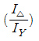
는?- 1/3
- √6
- √3
- 3
(정답률: 60%)
5. 그림과 같은 논리회로의 간략화 된 논리함수는?
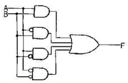
- 0
- 1
- A
- B
(정답률: 71%)
6. 그림과 같은 접점회로를 논리 게이트로 표현하면?
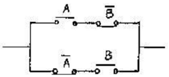
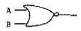
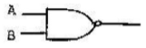
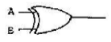
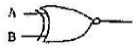
(정답률: 73%)
7. 유도전동기의 주파수 제어를 위한 정지형 전력변환장치는?
- 정류기
- 여자기
- 인버터
- 초퍼
(정답률: 76%)
8. 그림과 같은 회로에서 위상각 θ=60°의 유도부하에 대하여 점호각 α를 0 °에서 180 ° 까지 가감하는 경우에 전류가 연속되는 α의 각도는 몇도 까지 인가?
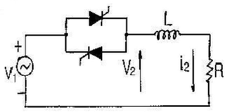
- 30 °
- 60 °
- 90 °
- 120 °
(정답률: 76%)
9. 그림의 회로에서 x와 Y를 선택 입력으로 하고 Z를 데이터 입력단자로 사용할 경우 이 회로의 기능은?
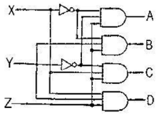
- 데이터 셀렉터
- 멀티플랙서
- 엔코더
- 디멀티 플랙서
(정답률: 66%)
10. 플립플롭회로에 대한 설명으로 잘못된 것은?
- 두가지 안정상태를 갖는다.
- 쌍안정 멀티바이브레이터이다.
- 반도체 메모리 소자로 이용된다.
- 트리거 펄스 1개마다 1개의 출력펄스를 얻는다.
(정답률: 87%)
11. 전선을 접속할 때의 유의사항으로 틀린 것은?
- 전선 접속점의 전기적 저항을 증가시키지 않는다.
- 전선 접속점의 기계적 강도가 80% 이상 감소 되어서는 안된다.
- 전선 접속점의 절연 내력이 약회되지 않도록 테이핑 한다.
- 전선 접속점에 장력이 가해지지 않도록 유의한다.
(정답률: 92%)
12. 지지물에 완금, 완목, 애자 등을 장치하는 것을 무슨 공사라 하는가?
- 근가공사
- 지선공사
- 장주공사
- 가선공사
(정답률: 75%)
13. 단상 교류 전동기의 입력을 표시하는 식은?
- 3EIcosθ
- √3EIcosθ
- EI
- EIcosθ
(정답률: 72%)
14. 다음 단위 중 자장의 세기의 단위는?
- AT/m
- Wb/m2
- Wb/m
- AT/m2
(정답률: 78%)
15. 전류의 방향과 기전력의 방향을 결정하는 법칙은?
- 렌츠의 법칙
- 플레밍의 오른손 법칙
- 패러데이의 전자유도법칙
- 앙페에르의 오른나사의 법칙
(정답률: 67%)
16. 직류기의 전기자 권선법 중 파권 권선에 대한 설명으로 옳은 것은?
- 브러시 수가 극수와 같다.
- 균압환이 필요하다.
- 저전압 대전류용이다.
- 전기자 병렬회로수는 항상 2이다.
(정답률: 75%)
17. 출력 3kW, 회전수 1500rpm인 전동기의 토크는 약 몇 kg·m 인가?
- 2
- 3
- 5
- 15
(정답률: 72%)
18. 단상 전파정류로 직류전압 100V를 얻는데 필요한 변압기 2차 권선의 전압은 약 몇 V인가?(오류 신고가 접수된 문제입니다. 반드시 정답과 해설을 확인하시기 바랍니다.)
- 80
- 91
- 111
- 444
(정답률: 40%)
19. 동기전도기의 기동을 다른 전동기로 할 경우에 대한 설명으로 옳은 것은?
- 유도전동기를 사용할 경우 동기전동기의 극수보다 2극 정도 적은 것을 택한다.
- 유도 전동기의 극수를 동기 전동기의 극수와 같게 한다.
- 다른 동기전동기로 기동시킬 경우 2극 정도 많은 전동기를 택한다.
- 유도전동기로 기동시킬 경우 동기전동기보다 2극 정도 많은 것을 택한다.
(정답률: 82%)
20. 다이리스터에 대한 설명 중 틀린 것은?
- PNPN구조를 이용하여 2개의 안정된 ON/OFF 동작을 한다.
- SCR도 사이리스터의 일부분으로 이 소자는 확산공정에 의하여 제조된다.
- 단자의 수에 의하여 2단자, 3단자 또는 4단자가 있고, 전류가 흐르는 방향에 따라 구분하기도 한다.
- NPN 또는 PNP의 3층 구조로서 베이스 신호에 의하여 ON/OFF를 제어할 수 있다.
(정답률: 60%)
2과목: 임의구분
21. 지상역률 80%인 1,000kVA의 부하를 100%의 역률로 개선하는데 필요한 전력용 콘덴서의 용량은 몇 kVA인가?
- 200
- 400
- 600
- 800
(정답률: 71%)
22. 효율 80%, 출력 10kW인 직류 발전기의 전 손실은 몇 kW인가?
- 1.25
- 2.5
- 2.0
- 3.0
(정답률: 49%)
23. 주석 도금한 0.75mm2(30/0.18)의 연동선에 비닐을 피복한 것으로 형광등용 안정기의 2차 배선에 주로 사용되는 전선은?
- IAL 전선
- RB 전선
- FL 전선
- ACSR 전선
(정답률: 79%)
24. 동기 발전기의 돌발 단락 전류를 주로 제한하는 것은?
- 동기 리액턴스
- 권선저항
- 누설리액턴스
- 영상리액턴스
(정답률: 74%)
25. 포화하고 있지 않은 직류 발전기의 회전수가 1/2로 감소 되었을 때 기전력을 전과 같은 값으로 하자면 여자를 속도 변화 전에 비하여 몇 배로 하여야 하는가?
- 0.5배
- 1배
- 2배
- 4배
(정답률: 73%)
26. 진공 중의 두 대전체 사이에 작용하는 힘이 1.2×10-8N이고, 대전체 사이에 유전체를 넣으니 작용하는 힘이 0.03×10-6N이 되었다면 여기에서 유전체의 비유전율은?
- 0.036
- 0.4
- 3.6
- 4000
(정답률: 47%)
27. PN 접합 정류소자에 대한 설명 중 틀린 것은?
- 정류비가 클수록 정류특성은 좋다.
- 역방향 전압에서 극히 적은 전류만이 흐른다.
- 순방향전압은 P에 [+], N에 [-] 전압을 가함을 말한다.
- 온도가 높아지면 순방향 및 역방향 전류가 모두 감소한다.
(정답률: 69%)
28. 직류 분권 전동기의 단자전압이 215V, 전기자 전류 50A, 전기자 전저항 0.1[Ω], 회전속도 1500rpm 일 때 발생하는 회전력은 약 몇 N·m인가?
- 66.9
- 76.9
- 86.9
- 96.9
(정답률: 47%)
29. 제3종 접지공사를 하여야 하는 금속체와 대지간의 전기저항값이 몇 [Ω] 이하인 경우에는 제3종 접지공사를 한 것으로 보는가?
- 10
- 40
- 70
- 100
(정답률: 75%)
30. 최근에 백화점이나 고급 의상실 등에서 많이 사용되는 삼파장 형광램프는 파장 폭이 좁은 3가지 색의 빛을 조합하여 효율이 높은 백색 빛을 얻는 램프인데 이 3가지에 포함되지 않는 색은?
- 청색
- 녹색
- 적색
- 황색
(정답률: 76%)
31. 정전콘덴서에 축적된 에너지와 전위차와의 관계를 그림으로 나타내면 어떤 형태로 나타나는가?
- 쌍곡선
- 타원
- 포물선
- 원
(정답률: 81%)
32. 3상 유도전동기가 여러 대 설치되어 있는 공장에서 역률을 개선하기 위하여 경제성, 보수성만 유리하게 콘덴서를 설치한다면 다음 중 어떤 방법이 가장 적절한가?
- 고압측에 설치한다.
- 저압측에 일괄해서 설치한다.
- 대용량 전동기에만 설치한다.
- 저압측에 각 전동기마다 개별적으로 설치한다.
(정답률: 72%)
33. 저항 4[Ω]과 유도리액턴스 3[Ω]이 직렬로 연결된 회로에 5A의 전류가 흐른다면, 이 회로에 가한 전압은 몇 V인가?
- 5
- 25
- 100
- 200
(정답률: 75%)
34. 8비트 마이크로프로세서의 주소지정방식 중 명력어의 오퍼랜드에 실제 데이터가 들어있는 주소의 주소가 들어있는 방식은
- 간접주소지정방식
- 직접주소지정방식
- 즉시주소지정방식
- 상대주소지정방식
(정답률: 22%)
35. 3상동기기의 제동권선의 효용은?
- 출력 증가
- 효율 증가
- 역률 개선
- 난조 방지
(정답률: 84%)
36. 정격 출력 P[kW], 역률 0.8, 효율 0.82로 운전하는 3상 유도 전동기에 V결선 변압기로 전원을 공급할때 변압기 1대의 최소 용량은 몇 kVA인가?
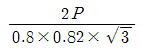
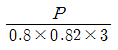
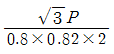
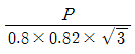
(정답률: 82%)
37. 다음 중 저압 연접인입선의 시설기준으로 틀린것은?
- 인입선에서 분기하는 점으로부터 100m를 넘는 지역에 미치지 아니할 것
- 폭 5m를 넘는 도로로 횡단하지 아니할 것
- 옥내를 통과하지 아니할 것
- 지름은 최소 3.2mm 이상의 경동선을 사용할 것
(정답률: 82%)
38. 공사원가는 공사시공 과정에서 발생한 항목의 합계액을 말하는 데 여기에 포함되지 않는 것은?
- 경비
- 재료비
- 노무비
- 일반관리비
(정답률: 92%)
39. 직접 콘크리트에 매입하여 시설하거나 전용의 불연성 또는 난연성 덕트에 넣어야만 시공할 수 있는 전선관은?
- CD관
- PE관
- PF-P관
- 두께 2mm 합성수지관
(정답률: 80%)
40. 온도의 급상승시 공기의 부피 팽창을 이용하여 동작하는 것으로, 완만한 온도상승에 대하여는 리이크 구멍을 통한 공기 분출로 다이어램프의 평형이 유지되어 완만한 온도 상승에는 동작하는 않는 구조의 감지기는?
- 보상식 분포형 감지기
- 차동식 분포형 감지기
- 차동식 스포트형 감지기
- 정온식 스포트형 감지기
(정답률: 69%)
3과목: 임의구분
41. 회전변류기의 직류측 전압을 조정하는 방법이 아닌 것은?
- 동기 승압기에 의한 방법
- 부하시 전압조정 변압기에 의한 방법
- 직렬리액턴스를 이용한 방법
- 여자전류를 조정하는 방법
(정답률: 55%)
42. 바이폴라, 트랜지스터의 동작 영역 중 트랜지스터가 정상적으로 증폭 동작을 하는 영역은?
- 포화영역
- 항복영역
- 차단영역
- 활성영역
(정답률: 71%)
43. 전류계 및 전압계를 확도에 따라 분류할 때 일반 배전반용으로 사용되는 지시계기의 계급은?
- 0.5급
- 1.0급
- 1.5급
- 2.5급
(정답률: 79%)
44. Z-80 CPU 제어명령에서 무동작 명령어로서 어떤 조작이나 연산을 지시하는 것이 아니라 컴퓨터로 다음에 실행해야 할 명령어로 진행할 것을 표시하는 명령어는?
- Reset
- NOP
- INT
- Wait
(정답률: 34%)
45. 다음 중 다이리스터의 응용분야가 아닌 것은?
- 스위칭
- 증폭기
- 쵸퍼
- 위상제어
(정답률: 50%)
46. 50kV의 전압으로 충전하여 5J의 에너지를 축적하는 콘덴서의 용량은 몇 pF인가?
- 4,000
- 25,000
- 40,000
- 250,000
(정답률: 52%)
47. 그림과 같은 회로에서 단자 a, b에서 본 합성 저항[Ω]은?
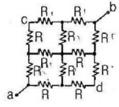
- 1/2R
- 1/3R
- 3/2R
- 2R
(정답률: 84%)
48. 다음 중 이항(Binary)연산 명령이 아닌 것은?
- AND
- OR
- Exclusive OR
- MOVE
(정답률: 75%)
49. 다음 중 마이크로프로세서의 시스템 버스(BUS)가 아닌 것은?
- 데이터 버스
- 어드레스 버스
- 제어 버스
- 입·출력 버스
(정답률: 48%)
50. 명령이 내려진 후 실제로 데이터를 판독(read) 또는 기록(write)되기 시작할 때까지의 소요시간을 무엇이라고 하는가?
- Access time
- Write time
- Delay time
- Transmission time
(정답률: 51%)
51. 마이크로프로세서의 레지스터 중 다음에 실행할 어드레스를 기억하는 것은?
- 어큐물레이터
- 인텍스레지스터
- 프로그램 카운터
- 스택포인터
(정답률: 40%)
52. 피뢰기가 동작할 때 방전 중의 단자전압의 파고값을 무엇이라고 하는가?
- 특성요소의 방전전류
- 방전개시전압
- 속류
- 제한전압
(정답률: 60%)
53. 변류기 개방시 2차측을 단락하는 이유는?
- 2차측 절연보호
- 2차측 과전류보호
- 측정오차 방지
- 1차측 과전류방지
(정답률: 81%)
54. 전력용 반도체 소자 중 일정한 전압값을 얻기위해 역바이어스 상태에서 항복전압과 관련된 특성을 사용하는 반도체 소자는?
- SCR
- Zener diode
- IGBT
- Transistor
(정답률: 73%)
55. 어떤 측정법으로 동일 시료를 무한 횟수로 측정하였을 때 데이터 분포의 평균치와 참값과의 차를 무엇이라하는가?
- 신뢰성
- 정확성
- 정밀도
- 오차
(정답률: 75%)
56. PERT에서 Network에 관한 설명 중 틀린 것은?
- 가장 긴 작업시간이 예상되는 공정을 주공정이라한다.
- 명목상의 활동(Dummy)은 점선 화살표(-->)로 표시한다.
- 활동(Activity)은 하나의 생산작업요소로서 원(O)으로 표시된다.
- Network는 일반적으로 활동과 단계의 상호관계로 구성된다.
(정답률: 57%)
57. 공정분석 기호 중 □는 무엇을 의미하는가?
- 검사
- 가공
- 정체
- 저장
(정답률: 67%)
58. 축의 완성지름, 철사의 인장강도, 아스피린 순도와 같은 데이터를 관리하는 가장 대표적인 관리도는?
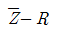
관리도- nP 관리도
- c 관리도
- u 관리도
(정답률: 66%)
59. 생산계획량을 완성하는데 필요한 인원이나 기계의 부하를 결정하여 이를 현재인원 및 기계의 능력과 비교하여 조정하는 것은?
- 일정계획
- 절차계획
- 공수계획
- 진도관리
(정답률: 86%)
60. TPM 활동의 기본을 이루는 3정 5S활동에서 3정에 해당되는 것은?
- 정시간
- 정돈
- 정리
- 정량
(정답률: 71%)